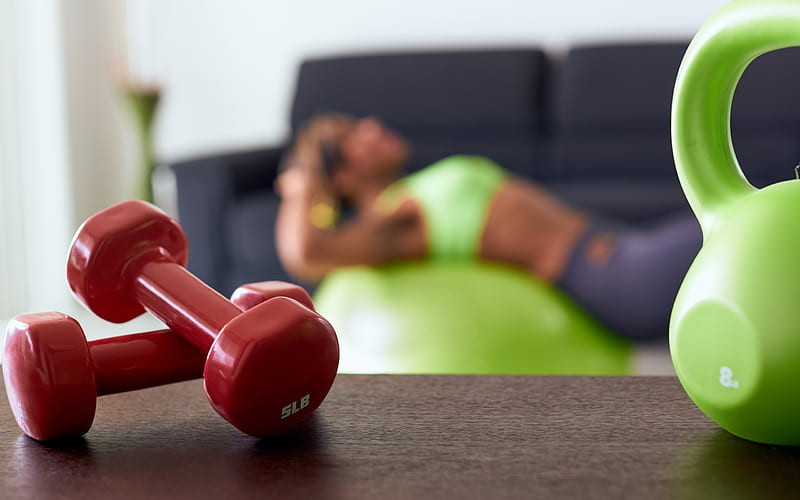

CHALLENGES

Setting aside time to exercise can be a challenge. Use a little creativity to get the most out of your time.
Squeeze in short walks throughout the day. If you don't have time for a full workout, don't worry about it. Any amount of activity is better than none at all. Shorter bursts of exercise, such as taking short walk breaks a few times during the day, offer benefits too. Aim to work your way up to exercising about 30 minutes on most days of the week.
Get up earlier. If your days are packed and the evening hours are busy, get up 30 minutes earlier a few times a week to exercise. Once you've adjusted to early-morning workouts, add another day or two to the routine.
Drive less, walk more. Park in the back row of the parking lot or even a few blocks away and walk to your destination.
Revamp your rituals. Your weekly Saturday matinee with the kids or your best friend could be reborn as your weekly Saturday bike ride, rock-climbing lesson or trip to the pool.
2. I think exercise is boring
It's natural to grow weary of a repetitive workout day after day, especially when you're going it alone. But exercise doesn't have to be boring.
Choose activities you enjoy. You'll be more likely to stay interested. Remember, anything that gets you moving counts.
Vary the routine. Rotate among several activities — such as walking, swimming and cycling — to keep you on your toes while conditioning different muscle groups.
Join forces. Exercise with friends, relatives, neighbors or co-workers. You'll enjoy the camaraderie and the group's encouragement.
Explore new options. Learn new skills while getting in a workout. Check out exercise classes or sports leagues at a recreation center or health club.
3. I'm self-conscious about how I look
Don't get down on yourself! Remind yourself that you're improving your cardiovascular health, or focus on how much stronger you feel after a workout.
Avoid the crowd. If you're uncomfortable exercising around others, go solo at first. Try an exercise video or an activity-oriented video game. Or consider investing in a stationary bicycle, treadmill, stair-climbing machine or other piece of home exercise equipment.
Focus on the future. Praise yourself for making a commitment to your health. And remember that as you become fitter and more comfortable exercising, your self-confidence is likely to improve as well.
4. I'm too tired to exercise after work
No energy to exercise? Without exercise, you'll have no energy. It's a cycle. But breaking the cycle with physical activity is one of the best gifts you can give yourself. And over time, exercise can help improve your sleep quality and your energy level.
Try a morning dose of exercise. Remember the suggestion to get up 30 minutes earlier to exercise? Hop on the treadmill or stationary bicycle while you listen to the radio or watch the morning news. Or step outside for a brisk walk.
Make lunchtime count. Keep a pair of walking shoes at your desk, and take a brisk walk during your lunch break.
Be prepared. Make sure you have comfortable shoes and loosefitting clothes for exercising. Take them with you to the mall or when you travel.
5. I'm too lazy to exercise
If the thought of a morning jog makes you tired, consider several ideas to get moving.
Set realistic expectations. If you set your goals too high, you might give up without even trying. Start with a walk around the block. Don't give up if you feel worn out. Take another walk around the block tomorrow. Keep it up, and eventually you'll no longer feel worn out.
Work with your nature, not against it. Plan physical activity for times of the day when you tend to feel more energetic, or at least not quite so lazy.
Schedule exercise as you would schedule an important appointment. Block off times in your calendar for physical activity, and make sure your friends and family are aware of your commitment. Ask for their encouragement and support.